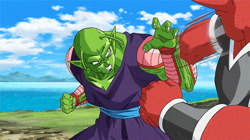

| 主题：七龙珠 | 当前：比克介绍 | 返回吕敬锋的主页 |
|  |
比克,原名比克大魔王，性格冷静、充满智慧，是战士中少有的智力型角色。他原本是邪恶的大魔王，但在孙悟空父子的影响下逐渐发生了变化,后与天神重新合体而放弃了邪恶的道路，甚至为了救悟饭牺牲了自己。在多次与悟空等人并肩战斗的过程中，比克逐渐弃恶向善，最终成为了真正的地球战士。
比克以其那美克星人的再生能力和强大的战斗力而著称，能发射能量波和施展魔法。他的再生能力在战斗中极为有用，使他能迅速从重伤中恢复。比克从冷酷的大魔王转变为悟饭的导师和朋友，传授战斗技巧，帮助悟饭成长。他的价值和存在意义也从征服世界转变为保护所爱之人。比克的形象从邪恶大魔王到孙家保姆，展现了他的成长与蜕变。